Breadboarding
1 Introduction
- Follow the instructions to make a working prototype version of the Yr7 LED torch project.
- You will need has 2 LEDs, a breadboard, two 330 ohm resistors and a 6X6 push to make switch.
- You will also need single core wire – black and red, wire cutter and wire strippers.
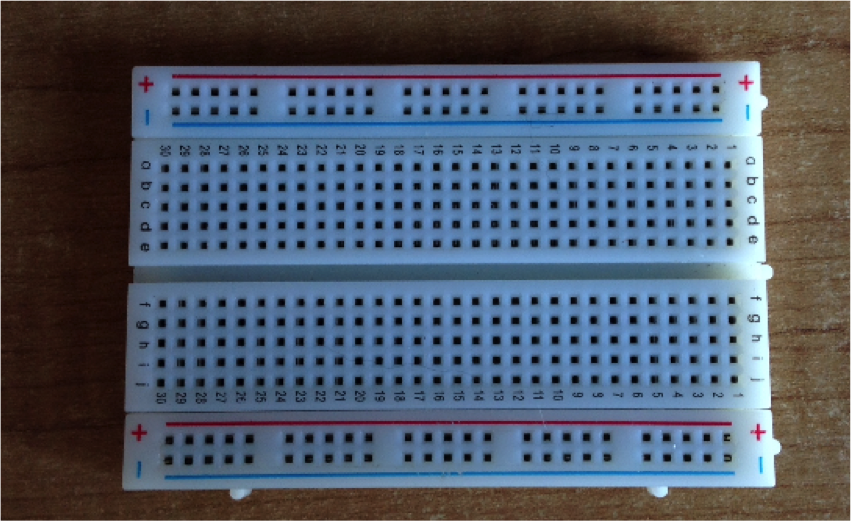
- Using the single core wire – black and red – cut and strip your wire to make your power leads. These will eventually connect to the power supply at 3V.
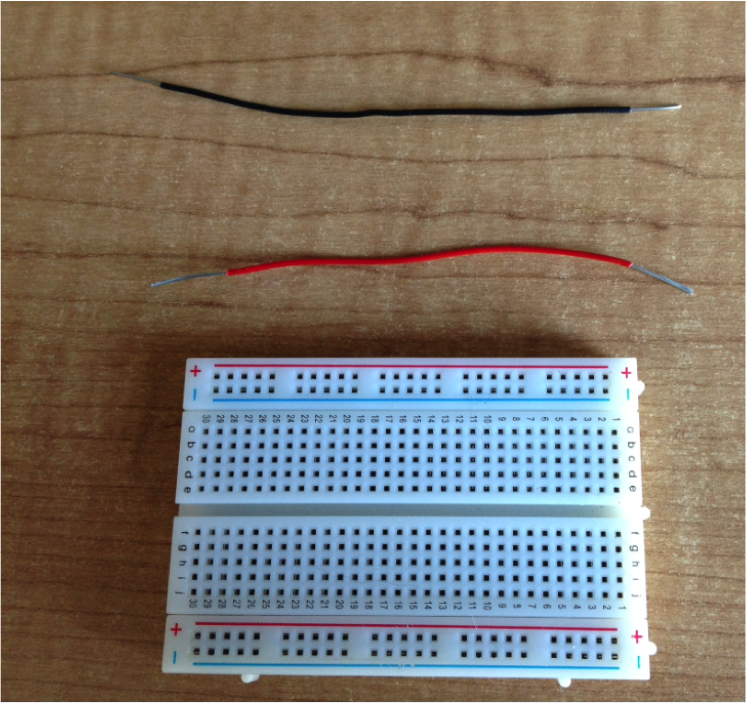
- Wire them in. Best to give a 90 degree bend at the end. Try to keep them as flat to the board as possible. Black to the negative rail and red to the positive rail.
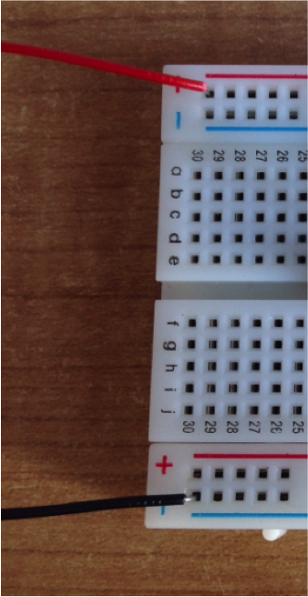
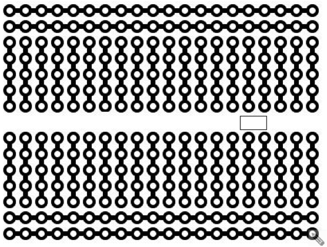
Let’s get connected
- Using the single core red wire make a short connector lead which is going to
- Run from the positive rail into the rest of the board.
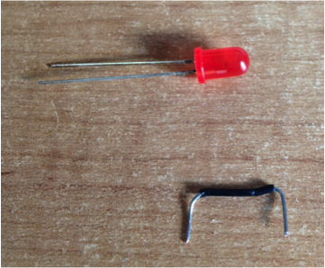
- Note LED shown for scale and I used the wrong colour wire.
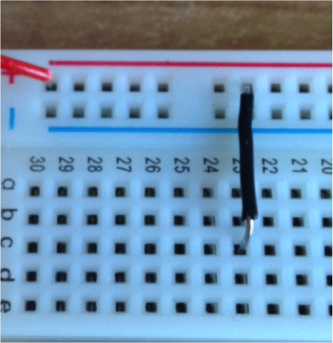
- Insert your connector lead to the board.
- Next add the LED. Remember they are dependent on being fitted with
- The correct polarity so make sure the long leg is the positive.
- Trim down the legs and insert to the board as shown. Flatten side is negative.
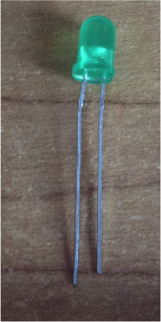 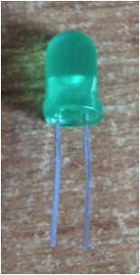 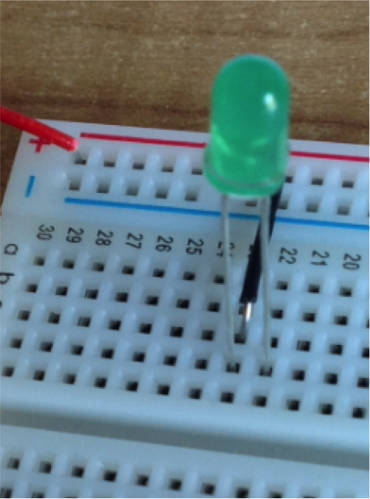
Mind the gap
- Add a push to make switch (P2M). They are not quite square so it will only fit one way round across the gap.
- The first hoop needs to be inline with the LED’s negative leg.
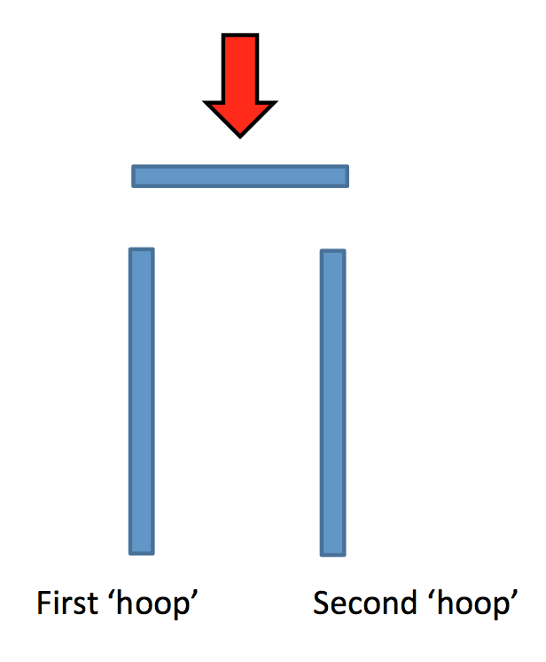
Resistance is not futile!
- Why do we need a resistor?
- Grad a load resistor. It needs to be a 330 ohm.
Can you remember the values of the colour bands?
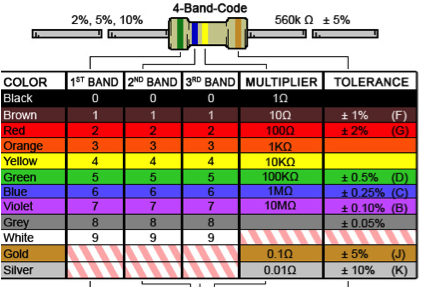
- Insert the resistor into the board. It needs to connect from the second hoop of the P2M switch to the negative rail.
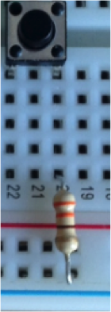
Blast off!
- Before plugging in double check your power supply is set to 3V.
- Follow the path of the electrons and make sure everything links together.
- Electrons will not flow unless they got somewhere to go.
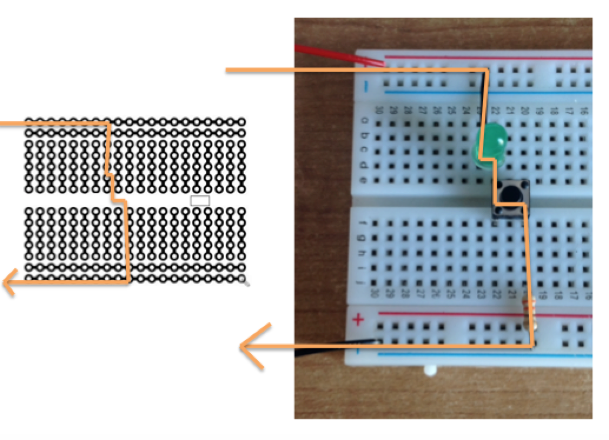
- When you are sure connect your power leads to the crocodile clips and switch on.
Challenges
- Add a second LED to your prototype circuit so both LEDs switch on and off with the P2M switch.
- Add a second LED to your prototype circuit so that one LED is permanently on and the other switches on and off with the P2M switch.
- Make the Year 7 door buzzer
- Use the 555 resource and build yourself a 555 flashing LED circuit
- Make a download socket and you can start making the Year 8 PIC license and PIC die projects.
- Other ideas… try here.